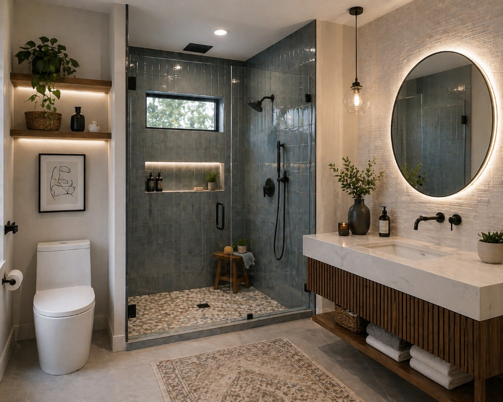

Budget and Materials: Where to Spend and Save
Strong remodel budgets are built around value, not just price. The goal is to spend where performance matters most and simplify where upgrades have less long-term impact.
Start with the highest-risk categories: waterproofing, plumbing work, ventilation, and skilled installation. These are the areas where cutting corners often creates expensive repairs later. Allocate budget here first, then shape finish choices around what remains.
When choosing materials, compare lifecycle cost instead of shelf price. Durable tile, quality fixtures, and moisture-resistant paint usually outlast bargain options and reduce maintenance. Paying slightly more upfront can lower replacement and repair costs over time.
Good places to save include decorative accents that are easy to swap later, such as mirrors, hardware, and some light fixtures. Standard-size vanities and in-stock materials can also keep labor and lead times under control without sacrificing quality.
Request clear allowances in your contractor quote for tile, fixtures, and accessories. Allowances help you understand what is included and make it easier to compare bids fairly. If you upgrade an item, you will know exactly how it affects the total.
Finally, reserve contingency funds for hidden conditions and decide in advance how change requests are approved. That single habit keeps budget conversations objective and helps your project finish with fewer surprises.